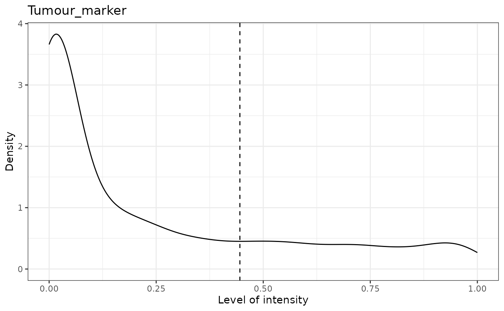
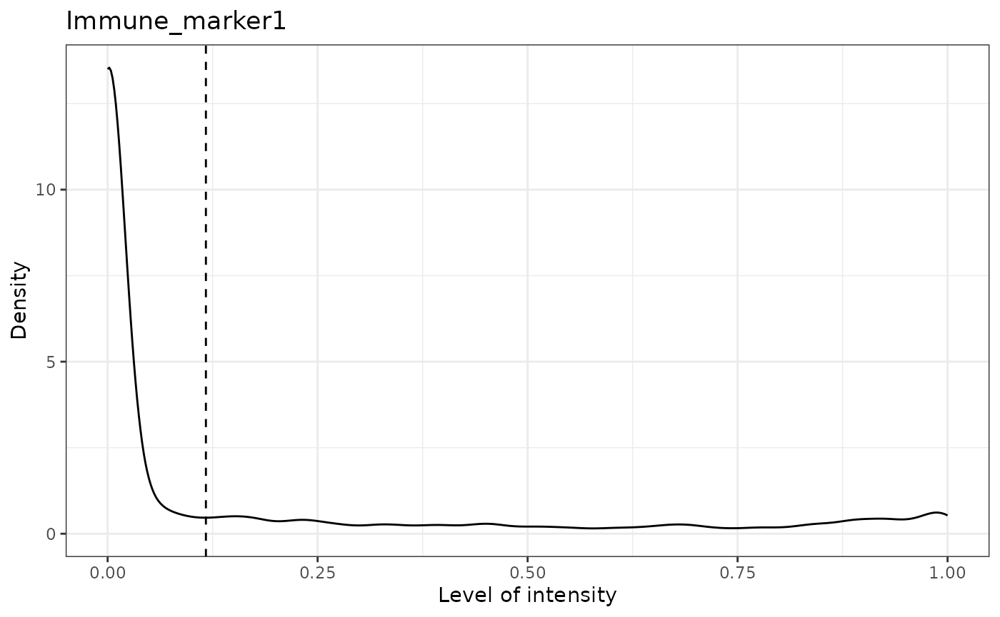
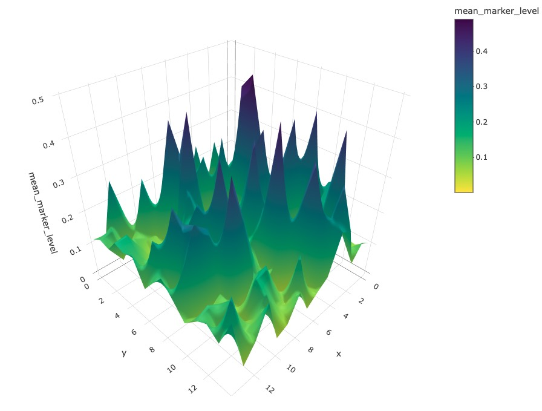

Quality control and visualisation with SPIAT
Yuzhou Feng
2023-11-02
Source:vignettes/quality-control_visualisation.Rmd
quality-control_visualisation.RmdFirst we load the SPIAT library.
Here we present some quality control steps implemented in SPIAT to check for the quality of phenotyping, help detect uneven staining, and other potential technical artefacts.
In this vignette we will use an inForm data file that’s already been
formatted for SPIAT with format_image_to_spe(), which we
can load with data(). We will use
define_celltypes() to define the cells with certain
combinations of markers.
data("simulated_image")
# define cell types
formatted_image <- define_celltypes(
simulated_image,
categories = c("Tumour_marker","Immune_marker1,Immune_marker2",
"Immune_marker1,Immune_marker3",
"Immune_marker1,Immune_marker2,Immune_marker4", "OTHER"),
category_colname = "Phenotype",
names = c("Tumour", "Immune1", "Immune2", "Immune3", "Others"),
new_colname = "Cell.Type")Visualise marker levels
Boxplots of marker intensities
Phenotyping of cells can be verified comparing marker intensities of
cells labelled positive and negative for a marker. Cells positive for a
marker should have high levels of the marker. An unclear separation of
marker intensities between positive and negative cells would suggest
phenotypes have not been accurately assigned. We can use
marker_intensity_boxplot() to produce a boxplot for cells
phenotyped as being positive or negative for a marker.
marker_intensity_boxplot(formatted_image, "Immune_marker1")Note that if phenotypes were obtained from software that uses machine learning to determine positive cells, which generally also take into account properties such as cell shape, nucleus size etc., rather than a strict threshold, some negative cells will have high marker intensities, and vice versa. In general, a limited overlap of whiskers or outlier points is tolerated and expected. However, overlapping boxplots suggests unreliable phenotyping.
Scatter plots of marker levels
Uneven marker staining or high background intensity can be identified
with plot_cell_marker_levels(). This produces a scatter
plot of the intensity of a marker in each cell. This should be
relatively even across the image and all phenotyped cells. Cells that
were not phenotyped as being positive for the particular marker are
excluded.
plot_cell_marker_levels(formatted_image, "Immune_marker1")
Heatmaps of marker levels
For large images, there is also the option of ‘blurring’ the image,
where the image is split into multiple small areas, and marker
intensities are averaged within each. The image is blurred based on the
num_splits parameter.
plot_marker_level_heatmap(formatted_image, num_splits = 100, "Tumour_marker")Identifying incorrect phenotypes
We may see cells with biologically implausible combination of markers
present in the input data when using
unique(spe_object$Phenotype). For example, cells might be
incorrectly typed as positive for two markers known to not co-occur in a
single cell type. Incorrect cell phenotypes may be present due to low
cell segmentation quality, antibody ‘bleeding’ from one cell to another
or inadequate marker thresholding.
If the number of incorrectly phenotyped cells is small (<5%), we advise simply removing these cells (see below). If it is a higher proportion, we recommend checking the cell segmentation and phenotyping methods, as a more systematic problem might be present.
Removing cells with incorrect phenotypes
If you identify incorrect phenotypes or have any properties (columns)
that you want to exclude you can use select_celltypes().
Set celltypes the values that you want to keep or exclude
for a column (feature_colname). Set keep as
TRUE to include these cells and FALSE to
exclude them.
data_subset <- select_celltypes(
formatted_image, keep=TRUE,
celltypes = c("Tumour_marker","Immune_marker1,Immune_marker3",
"Immune_marker1,Immune_marker2",
"Immune_marker1,Immune_marker2,Immune_marker4"),
feature_colname = "Phenotype")
# have a look at what phenotypes are present
unique(data_subset$Phenotype)## [1] "Immune_marker1,Immune_marker2"
## [2] "Tumour_marker"
## [3] "Immune_marker1,Immune_marker2,Immune_marker4"
## [4] "Immune_marker1,Immune_marker3"In this vignette we will work with all the original phenotypes
present in formatted_image.
Dimensionality reduction to identify misclassified cells
We can also check for specific misclassified cells using dimensionality reduction. SPIAT offers tSNE and UMAPs based on marker intensities to visualise cells. Cells of distinct types should be forming clearly different clusters.
The generated dimensionality reduction plots are interactive, and users can hover over each cell and obtain the cell ID. Users can then remove specific misclassified cells.
# First predict the phenotypes (this is for generating not 100% accurate phenotypes)
predicted_image2 <- predict_phenotypes(spe_object = simulated_image,
thresholds = NULL,
tumour_marker = "Tumour_marker",
baseline_markers = c("Immune_marker1",
"Immune_marker2",
"Immune_marker3",
"Immune_marker4"),
reference_phenotypes = FALSE)## [1] "Tumour_marker threshold intensity: 0.445450443784465"
## [1] "Immune_marker1 threshold intensity: 0.116980867970434"
## [1] "Immune_marker2 threshold intensity: 0.124283809517202"## [1] "Immune_marker3 threshold intensity: 0.0166413130263845"## [1] "Immune_marker4 threshold intensity: 0.00989731350898589"
# Then define the cell types based on predicted phenotypes
predicted_image2 <- define_celltypes(
predicted_image2,
categories = c("Tumour_marker", "Immune_marker1,Immune_marker2",
"Immune_marker1,Immune_marker3",
"Immune_marker1,Immune_marker2,Immune_marker4"),
category_colname = "Phenotype",
names = c("Tumour", "Immune1", "Immune2", "Immune3"),
new_colname = "Cell.Type")
# Delete cells with unrealistic marker combinations from the dataset
predicted_image2 <-
select_celltypes(predicted_image2, "Undefined", feature_colname = "Cell.Type",
keep = FALSE)
# TSNE plot
g <- dimensionality_reduction_plot(predicted_image2, plot_type = "TSNE",
feature_colname = "Cell.Type")Note that dimensionality_reduction_plot() only prints a
static version of the UMAP or tSNE plot. If the user wants to interact
with this plot, they can pass the result to the ggplotly()
function from the plotly package. Due to the file size
restriction, we only show a screenshot of the interactive tSNE plot.
plotly::ggplotly(g) 
The plot shows that there are four clear clusters based on marker intensities. This is consistent with the cell definition from the marker combinations from the “Phenotype” column. (The interactive t-SNE plot would allow users to hover the cursor on the misclassified cells and see their cell IDs.) In this example, Cell_3302, Cell_4917, Cell_2297, Cell_488, Cell_4362, Cell_4801, Cell_2220, Cell_3431, Cell_533, Cell_4925, Cell_4719, Cell_469, Cell_1929, Cell_310, Cell_2536, Cell_321, and Cell_4195 are obviously misclassified according to this plot.
We can use select_celltypes() to delete the
misclassified cells.
predicted_image2 <-
select_celltypes(predicted_image2, c("Cell_3302", "Cell_4917", "Cell_2297",
"Cell_488", "Cell_4362", "Cell_4801",
"Cell_2220", "Cell_3431", "Cell_533",
"Cell_4925", "Cell_4719", "Cell_469",
"Cell_1929", "Cell_310", "Cell_2536",
"Cell_321", "Cell_4195"),
feature_colname = "Cell.ID", keep = FALSE)Then plot the TSNE again (not interactive). This time we see there are fewer misclassified cells.
# TSNE plot
g <- dimensionality_reduction_plot(predicted_image2, plot_type = "TSNE", feature_colname = "Cell.Type")
# plotly::ggplotly(g) # uncomment this code to interact with the plot
Visualising tissues
In addition to the marker level tissue plots for QC, SPIAT has other methods for visualising markers and phenotypes in tissues.
Categorical dot plot
We can see the location of all cell types (or any column in the data)
in the tissue with plot_cell_categories(). Each dot in the
plot corresponds to a cell and cells are coloured by cell type. Any cell
types present in the data but not in the cell types of interest will be
put in the category “OTHER” and coloured lightgrey.
my_colors <- c("red", "blue", "darkcyan", "darkgreen")
plot_cell_categories(spe_object = formatted_image,
categories_of_interest =
c("Tumour", "Immune1", "Immune2", "Immune3"),
colour_vector = my_colors, feature_colname = "Cell.Type")
plot_cell_categories() also allows the users to plot the
categories layer by layer when there are too many cells by setting
layered parameter as TRUE. Then the cells will
be plotted in the order of categories_of_interest layer by
layer. Users can also use cex parameter to change the size
of the points.
3D surface plot
We can visualise a selected marker in 3D with
marker_surface_plot(). The image is blurred based on the
num_splits parameter.
marker_surface_plot(formatted_image, num_splits=15, marker="Immune_marker1")Due to the restriction of the file size, we have disabled the interactive plot in this vignette. Here only shows a screen shot. (You can interactively move the plot around to obtain a better view with the same code).

3D stacked surface plot
To visualise multiple markers in 3D in a single plot we can use
marker_surface_plot_stack(). This shows normalised
intensity level of specified markers and enables the identification of
co-occurring and mutually exclusive markers.
marker_surface_plot_stack(formatted_image, num_splits=15, markers=c("Tumour_marker", "Immune_marker1"))
The stacked surface plots of the Tumour_marker and Immune_marker1 cells in this example shows how Tumour_marker and Immune_marker1 are mutually exclusive as the peaks and valleys are opposite. Similar to the previous plot, we have disabled the interactive plot in the vignette. (You can interactively move the plot around to obtain a better view with the same code.)
Reproducibility
## R version 4.3.2 (2023-10-31)
## Platform: x86_64-pc-linux-gnu (64-bit)
## Running under: Ubuntu 22.04.3 LTS
##
## Matrix products: default
## BLAS: /usr/lib/x86_64-linux-gnu/openblas-pthread/libblas.so.3
## LAPACK: /usr/lib/x86_64-linux-gnu/openblas-pthread/libopenblasp-r0.3.20.so; LAPACK version 3.10.0
##
## locale:
## [1] LC_CTYPE=C.UTF-8 LC_NUMERIC=C LC_TIME=C.UTF-8
## [4] LC_COLLATE=C.UTF-8 LC_MONETARY=C.UTF-8 LC_MESSAGES=C.UTF-8
## [7] LC_PAPER=C.UTF-8 LC_NAME=C LC_ADDRESS=C
## [10] LC_TELEPHONE=C LC_MEASUREMENT=C.UTF-8 LC_IDENTIFICATION=C
##
## time zone: UTC
## tzcode source: system (glibc)
##
## attached base packages:
## [1] stats4 stats graphics grDevices utils datasets methods
## [8] base
##
## other attached packages:
## [1] SPIAT_1.4.1 SpatialExperiment_1.10.0
## [3] SingleCellExperiment_1.22.0 SummarizedExperiment_1.30.2
## [5] Biobase_2.60.0 GenomicRanges_1.52.1
## [7] GenomeInfoDb_1.36.4 IRanges_2.34.1
## [9] S4Vectors_0.38.2 BiocGenerics_0.46.0
## [11] MatrixGenerics_1.12.3 matrixStats_1.0.0
## [13] BiocStyle_2.28.1
##
## loaded via a namespace (and not attached):
## [1] bitops_1.0-7 deldir_1.0-9
## [3] gridExtra_2.3 rlang_1.1.1
## [5] magrittr_2.0.3 compiler_4.3.2
## [7] spatstat.geom_3.2-7 DelayedMatrixStats_1.22.6
## [9] systemfonts_1.0.5 vctrs_0.6.4
## [11] stringr_1.5.0 pkgconfig_2.0.3
## [13] crayon_1.5.2 fastmap_1.1.1
## [15] magick_2.8.1 XVector_0.40.0
## [17] labeling_0.4.3 scuttle_1.10.3
## [19] utf8_1.2.4 rmarkdown_2.25
## [21] pracma_2.4.2 ragg_1.2.6
## [23] purrr_1.0.2 xfun_0.40
## [25] zlibbioc_1.46.0 cachem_1.0.8
## [27] beachmat_2.16.0 jsonlite_1.8.7
## [29] goftest_1.2-3 highr_0.10
## [31] rhdf5filters_1.12.1 DelayedArray_0.26.7
## [33] spatstat.utils_3.0-4 Rhdf5lib_1.22.1
## [35] BiocParallel_1.34.2 parallel_4.3.2
## [37] R6_2.5.1 bslib_0.5.1
## [39] stringi_1.7.12 spatstat.data_3.0-3
## [41] limma_3.56.2 jquerylib_0.1.4
## [43] Rcpp_1.0.11 bookdown_0.36
## [45] knitr_1.45 tensor_1.5
## [47] R.utils_2.12.2 Matrix_1.6-1.1
## [49] tidyselect_1.2.0 abind_1.4-5
## [51] yaml_2.3.7 codetools_0.2-19
## [53] spatstat.random_3.2-1 spatstat.explore_3.2-5
## [55] lattice_0.21-9 tibble_3.2.1
## [57] withr_2.5.2 Rtsne_0.16
## [59] evaluate_0.22 desc_1.4.2
## [61] polyclip_1.10-6 pillar_1.9.0
## [63] BiocManager_1.30.22 plotly_4.10.3
## [65] generics_0.1.3 rprojroot_2.0.3
## [67] RCurl_1.98-1.12 ggplot2_3.4.4
## [69] sparseMatrixStats_1.12.2 munsell_0.5.0
## [71] scales_1.2.1 glue_1.6.2
## [73] lazyeval_0.2.2 tools_4.3.2
## [75] data.table_1.14.8 locfit_1.5-9.8
## [77] fs_1.6.3 rhdf5_2.44.0
## [79] grid_4.3.2 tidyr_1.3.0
## [81] crosstalk_1.2.0 DropletUtils_1.20.0
## [83] edgeR_3.42.4 colorspace_2.1-0
## [85] nlme_3.1-163 GenomeInfoDbData_1.2.10
## [87] HDF5Array_1.28.1 mmand_1.6.3
## [89] cli_3.6.1 spatstat.sparse_3.0-3
## [91] textshaping_0.3.7 fansi_1.0.5
## [93] viridisLite_0.4.2 S4Arrays_1.0.6
## [95] dplyr_1.1.3 gtable_0.3.4
## [97] R.methodsS3_1.8.2 sass_0.4.7
## [99] digest_0.6.33 dqrng_0.3.1
## [101] htmlwidgets_1.6.2 farver_2.1.1
## [103] rjson_0.2.21 memoise_2.0.1
## [105] htmltools_0.5.6.1 pkgdown_2.0.7
## [107] R.oo_1.25.0 lifecycle_1.0.3
## [109] httr_1.4.7